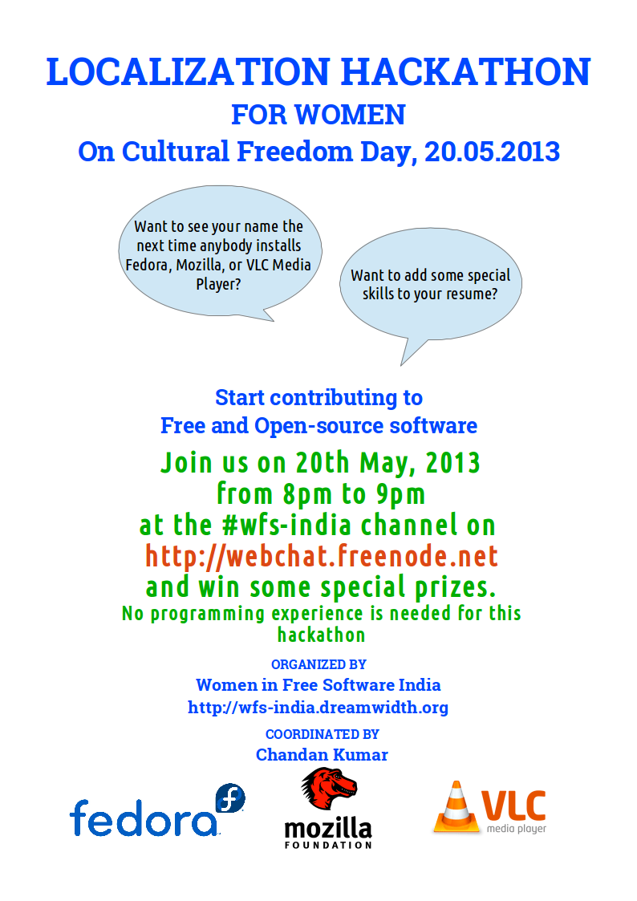

Do you want to see your name the next time anybody installs Fedora, Mozilla or VLC Media Player?
Do you want to add some special points to your resume?
Do you want to make a difference?
Do you want a non-english speaking person use the software you love?
If you said yes to any of the questions asked, then Localization Hackathon is just the right event for you.

Organized by WFS-India (Women in Free Software India)
Conducted by Chandan Kumar